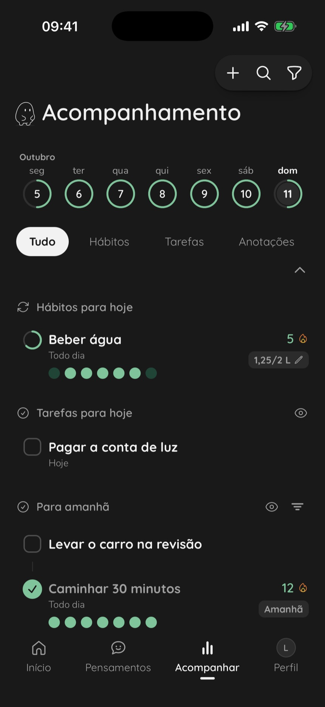

Sua cabeça não foi feita para guardar tudo.
O Think Capture ajuda você a tirar da cabeça o que fica rodando, não perder o que importa e cuidar de cada coisa na hora certa.
Tire da cabeça em segundos. Organize quando tiver calma. Veja o que está andando.



Tire da cabeça em segundos.
Experimente aqui: fale ou escreva o que está na sua cabeça e veja como é rápido tirar um pensamento dela. No aplicativo, ele ainda ganha um lembrete na hora certa e vira tarefa, hábito ou anotação quando você quiser.
O que está passando pela sua cabeça?
Toque no microfone e fale
0:00
Pensamentos
Nada capturado aindaO que você capturar no Início aparece aqui.
Hoje
Aqui só o Início funciona. O resto está no aplicativo.
Capturado
Um a menos na sua cabeça.
Cabeça leve, todos os dias.
Nada importante esquecido.
O que veio à cabeça fica guardado no instante em que veio, e espera por você.
Um lembrete na hora certa.
Hoje, amanhã ou em uma semana. Saber que alguém avisa deixa você seguir o dia em paz.
Hábitos que ficam.
Uma meta do seu jeito, um mapa dos dias e a sequência que cresce. Meio copo de água também conta.
Do pensamento ao que anda.
Fale ou escreva.
O texto aparece enquanto você fala. Um toque e está guardado.
Deixe para depois.
Ponha por que importa e um lembrete. Não precisa decidir nada agora.
Organize com calma.
Quando fizer sentido, o pensamento vira tarefa, hábito ou anotação.
Acompanhe.
As tarefas do dia, os hábitos com a sequência e o que já saiu da cabeça.
Anotar é o que faz parar de pesar.
mudanças de pensamento passam pela cabeça de uma pessoa num dia comum.
Tseng e Poppenk, 2020 →Tarefas por fazer voltam à mente sem pedir licença. Fazer um plano para elas é o que as cala.
Masicampo e Baumeister, 2011 →mais rápido para dormir, em média, para quem anotou o que tinha por fazer antes de deitar.
Scullin e colegas, 2018 →O essencial é grátis. Para sempre.
Capturar, organizar e acompanhar não têm data para acabar. O Think Pro é para quem quer ir mais fundo.
Para começar hoje.
Para criar o hábito de tirar da cabeça.
- Pensamentos sem limite, por voz ou texto
- Tarefas, hábitos e anotações
- Um lembrete para cada coisa
- Sincronização entre aparelhos
Para quem já não larga mais.
Quando o aplicativo vira parte do dia.
- Tarefas, hábitos e anotações sem limite
- Lembretes em vários horários do dia
- Histórico completo do que você guardou
- Temas, cores e widgets do seu jeito
Baixe o Think Capture.
Guarde o primeiro pensamento agora. O Kiro cuida do resto. Grátis para iPhone e Android.